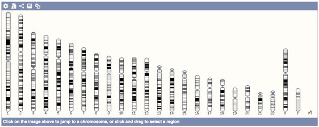
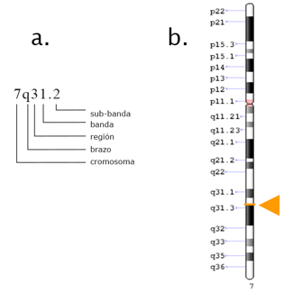

Problema: ¿Cómo visualizar el conjunto de cromosomas de una especie?

Mostrar un Idiograma (o mapa citogenético). Un Idiograma, también conocido como cariograma, es una representación gráfica del cariotipo que expresa la organización del conjunto de cromosomas de una especie (Oliva et al., 2013).
Para crear un Idiograma:
Patrón de bandas:
Las bandas cromosómicas ayudan a identificar a cada cromosoma y localizar los loci genéticos (lugares dentro de un cromosoma) asociados a patologías relevantes. Las bandas son el resultado de la observación por microscopio al teñir el cromosoma con químicos y su visualización está definida por sectores representados en escala de grises.
La nomenclatura de las bandas está dada por el International System for Chromosome Nomenclature (ISCN) y distingue jerárquicamente la delimitación por cromosoma, brazo, región, banda y sub-banda. Las regiones, bandas y sub-bandas se enumeran ascendentemente empezando por 1, siendo 1 la banda más cercana al centrómero (el punto centro del cromosoma).
Por ejemplo, la Imagen 6.27a muestra la nomenclatura 7q31.2 que indica que se hace referencia a un sector dentro del cromosoma siete, brazo largo (q), región tres, banda uno, y separado por el punto, la sub-banda 2. La Imagen 6.27b, obtenida con Genome Decoration Page, representa gráficamente la posición citogenética 7q31.2 que corresponde a la región de pares de bases desde 117,479,963 a 117,668,665 en el cromosoma 7 (utilizando la versión actualizada 109.20190607 de la especie Homo sapiens, GRCh38.p13).
Los datos del patrón de bandas pueden ser obtenidos del NCBI a través de ficheros disponibles en su cuenta de FTP y que su nombre inicia con el formato ideogram_
El patrón Idiograma se crea instanciando la clase “IdiogramPanel” (Imagen 6.28) la cual representa el panel gráfico en la interfaz de usuario donde se muestran los cromosomas dibujados. El idiograma se compone de uno o varios cromosomas dibujados (clase “ChromosomeGraph”) y cada cromosoma puede presentar su patrón de bandas (clase “Band”). Si el idiograma se compone de varios cromosomas, su visualización será similar a la Imagen 6.26. Si el idiograma se compone de un solo cromosoma, su visualización será similar al de la Imagen 6.29b.
La clase “ChromosomeGraph” está relacionada a la clase “chromosome” desde donde obtiene los datos para graficar los cromosomas. Cada cromosoma se grafica considerando los atributos de la clase: ancho (“width”), alto (“height”) y etiqueta (“label”). El cromosoma permite interacciones representadas por operaciones como seleccionar (“select”), desplazar (“pan”), acercar y alejar (zoomIn y zoomOut, respectivamente). Además, el cromosoma puede resaltar posiciones de ciertos elementos del genoma como son, por ejemplo, variaciones genéticas o genes. A estas posiciones se las ha denominado “anotaciones” y provienen de la clase “AnnotationElement”. La clase “AnnotationElement” no es propia del Modelo Conceptual del Genoma, sino que ha sido introducida en este diagrama para generalizar el tipo de anotaciones que pueden representarse sobre la secuencia del cromosoma.
En el panel del Idiograma (clase “IdiogramPanel”), los Idiogramas se presentan ordenados por el número de cromosoma (“identifier”).
La clase “Band” tiene una relación recursiva para representar a la sección, banda y sub-banda. Estos datos son suministrados por la clase “cytoband” del modelo conceptual.
La Imagen 6.29 muestra una porción de la interfaz de usuario de Genome Maps (Príncipe Felipe Research Center, 2015), donde se muestra dos implementaciones del patrón Idiograma; una resaltada por el recuadro en color rojo y otra bajo el recuadro rojo representando un solo cromosoma. La primera implementación muestra el Idiograma dispuesto horizontalmente y en una sola fila, con 23 pares de cromosomas de la especie humana: 22 pares de cromosomas autosomas y un par de cromosomas gonosomas (X y o Y, siendo XX para el sexo femenino, y XY para el sexo masculino). La segunda muestra un solo cromosoma dispuesto horizontalmente con bandas etiquetadas con la nomenclatura de las bandas.